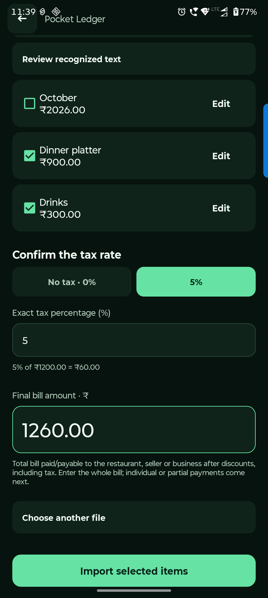

Android handbook · 6.1.0-preview.14
Scan a receipt.
Review detected items before adding them to a bill.
Split bill → Add items → Upload bill · Image or PDF
Scan, then review every item.
Receipt recognition is a starting point. Confirm the names, numbers and tax before importing anything.
Choose an image or scanned PDF
Use a clear English receipt. Recognition happens on-device. Current limits are 20 MB and five PDF pages.
Remove or correct false matches
Untick headings, dates or totals mistaken for items. Edit a detected item, or open Review recognized text and re-read your correction.
Confirm tax and final amount
Choose the exact tax rate and receipt’s whole final amount. Then Import selected items. Assign the imported items to people and review the split.
Importing into a bill with existing items asks to replace them. Existing payment records stay for your review. If recognition is poor, go back and add the items manually.

Questions you might have.
Can I trust every recognized line?
No. Dates, headings and totals can be mistaken for items. Review the selection, correct amounts and explicitly confirm the tax rate.
What if recognition fails?
Try a clearer English image or scanned PDF within the size/page limits, edit the recognized text, or enter items manually.